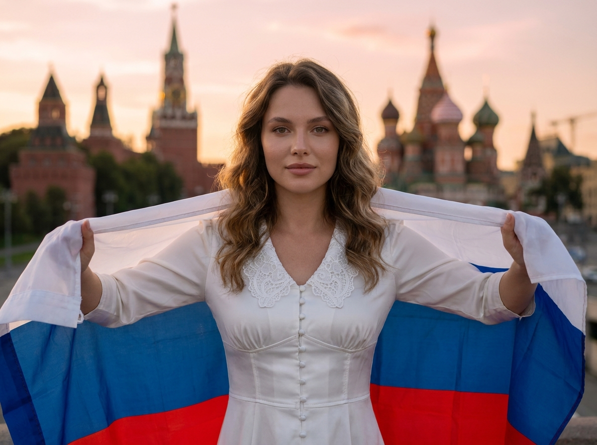
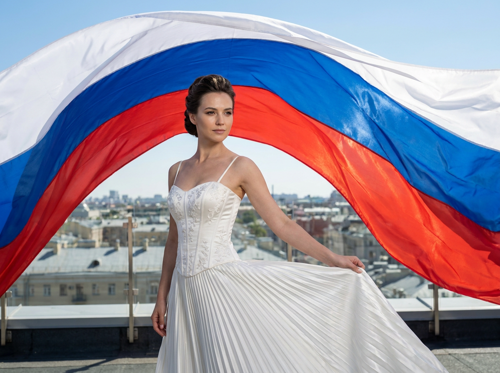
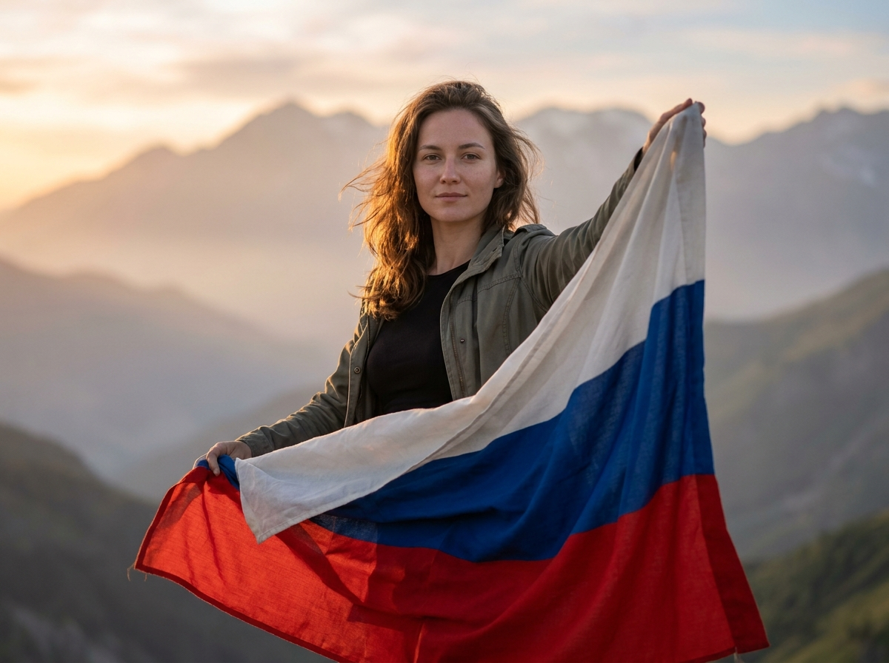
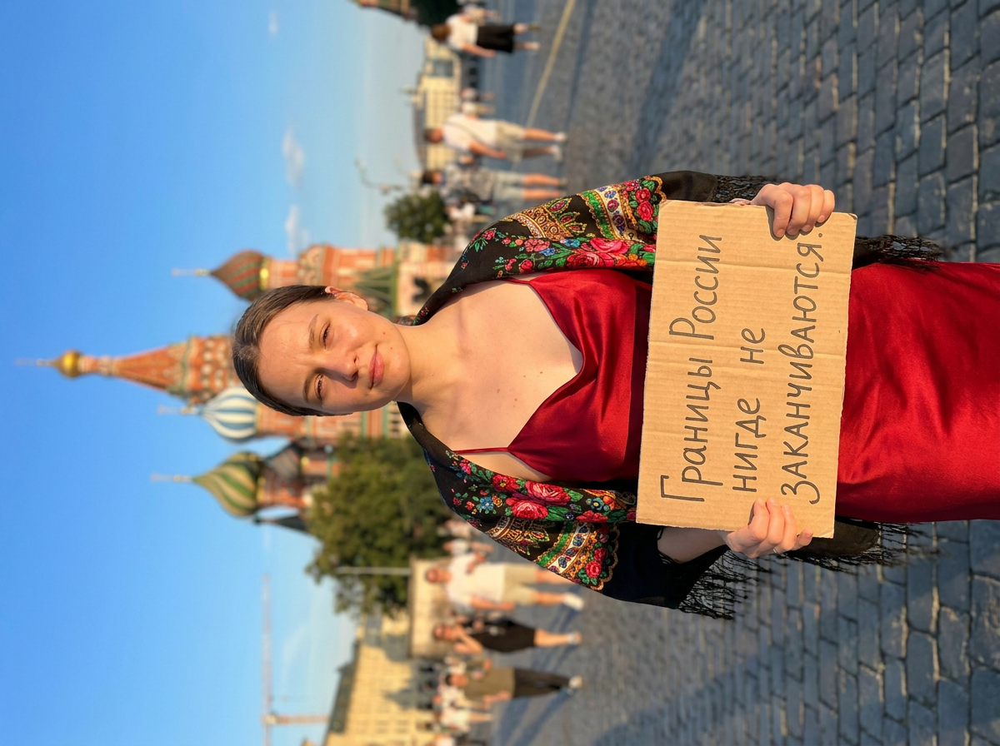
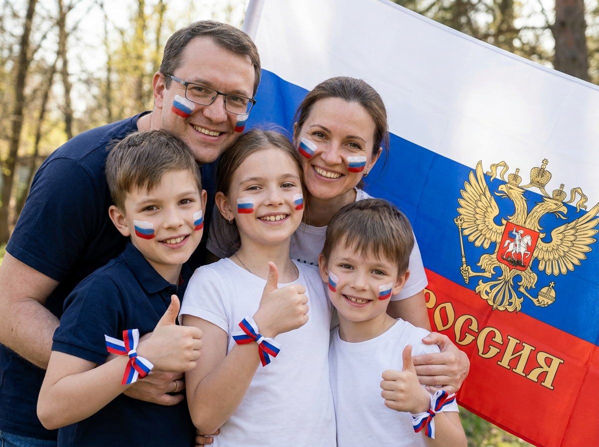
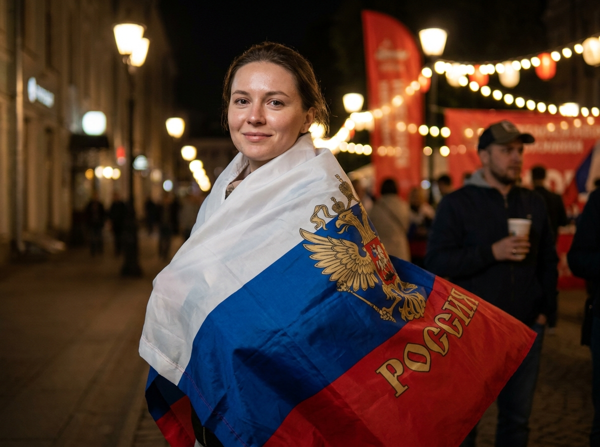
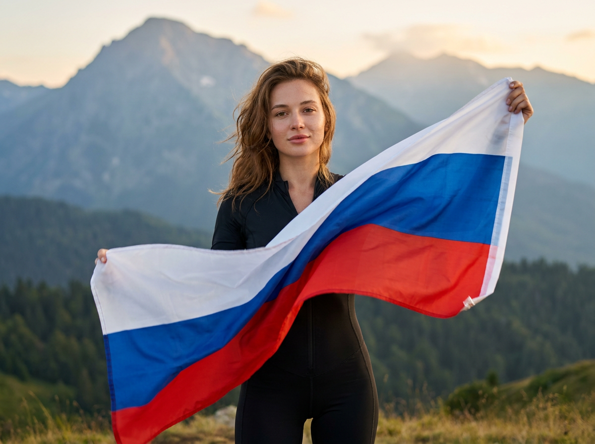
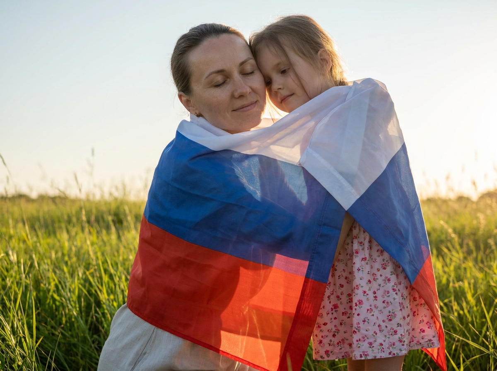
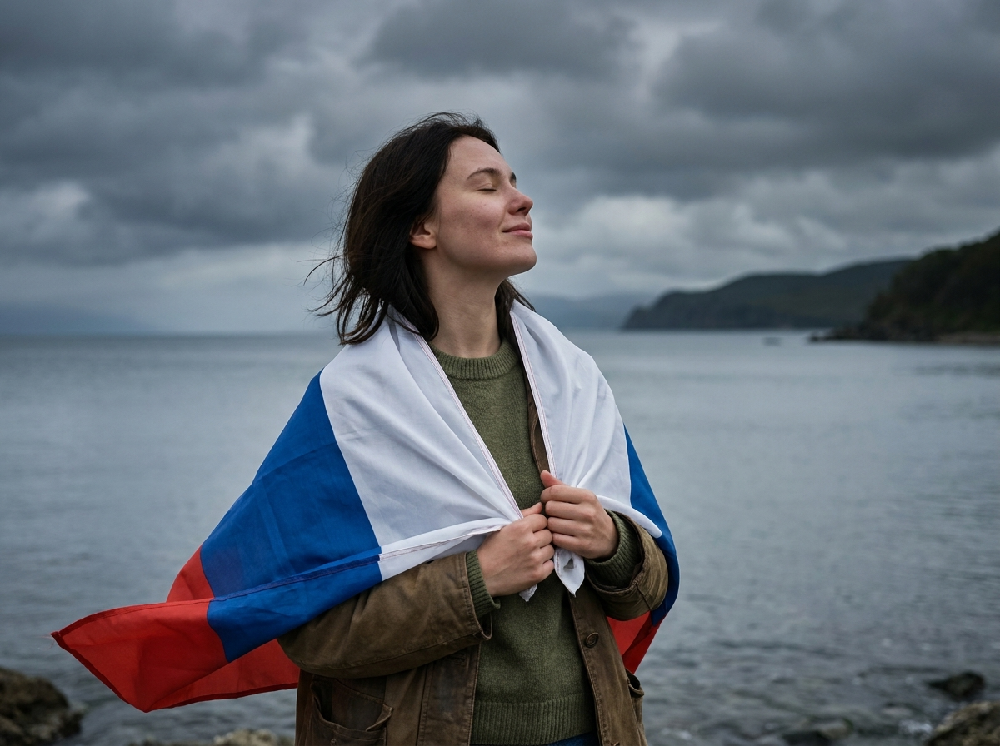
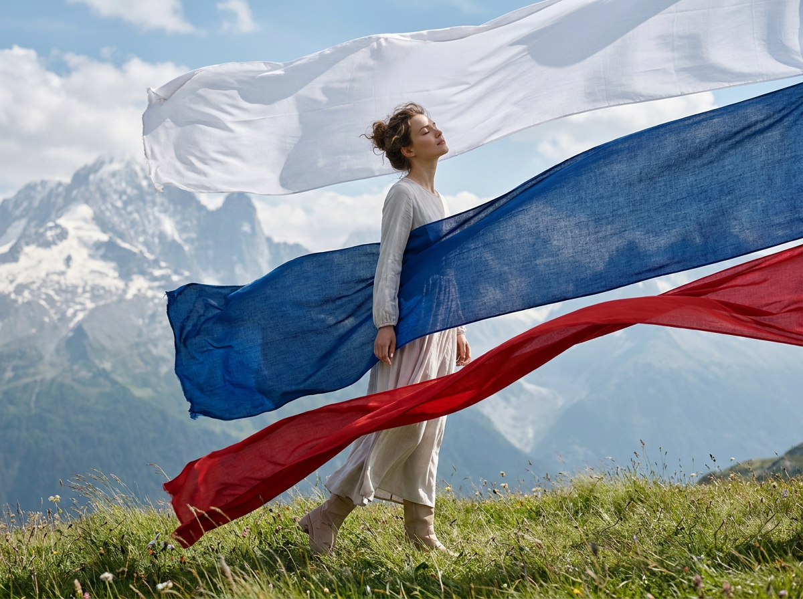

ИИ-фото на День России: 10 промптов для нейросети

Праздничное фото ко Дню России не всегда получается снять удачно: мешают погода, фон, одежда и сложный в работе флаг. Генерация в нейросети помогает собрать нужную сцену в одном кадре и быстро попробовать несколько настроений.
В подборке — 10 промптов для разных сюжетов: от портрета с триколором и семейной фотографии до ночного мероприятия, прогулки по Москве, горного пейзажа и сюрреалистичной fashion-съёмки.
Как сгенерировать такое фото: пошагово
Нужен снимок анфас при ровном свете, лицо в кадре целиком, без тёмных очков и головных уборов. Разрешение от 1000 пикселей по короткой стороне. Чем чётче исходник, тем точнее модель повторит черты.
Выберите сценарий ниже и нажмите «Копировать» — текст уйдёт в буфер целиком, вместе с командой сохранения внешности. Эта команда стоит первой строкой и отвечает за то, чтобы на выходе было ваше лицо, а не случайное.
Кнопка «Сгенерировать» рядом с каждым промптом открывает модель в новой вкладке. Nano Banana Pro работает с референсом лица — в отличие от моделей, которые генерируют портрет с нуля и узнаваемость теряют.
Промпт — в поле ввода, портрет — через загрузку референса. Порядок значения не имеет, но без референса команда сохранения внешности работать не будет: модели нечего сохранять.
Для сторис и ленты берите 9:16, для превью и обложек — 4:3. Первый результат редко идеален: если поза или свет ушли не туда, поправьте соответствующую часть промпта и запустите заново. Обычно хватает двух-трёх итераций.
10 промптов для генерации
1. Флаг-крылья за спиной
Строго сохранить внешность по загруженному референсу: черты лица, пропорции, мимику и текстуру кожи без изменений. Фотореалистичный кинематографический портрет на открытом воздухе, вертикальная композиция, мягкий естественный свет. В центре — взрослая молодая женщина с волнистыми волосами, спокойным уверенным лицом и прямым взглядом в объектив. Макияж аккуратный: выразительные глаза, ровный тон кожи, губы слегка сомкнуты. На ней белое платье или корсетный наряд в духе европейской классики, полуприлегающий силуэт, тонкие швы, пуговицы спереди, плотная фактура сатина или крепа. У шеи — изящный белый кружевной ворот с детальным узором. За спиной женщина держит российский триколор, и полотна расходятся по сторонам, образуя подобие крыльев. Строгое расположение цветов: белый сверху, синий посередине, красный снизу. Флаг выглядит настоящей тканью: диагональные складки, натяжение, микроморщины, волокна и естественные тени, без искажённых оттенков и плавления материала. Резкий фокус на лице и ткани, высокая детализация.
2. Триколор над городом

Строго сохранить внешность по загруженному референсу: черты лица, пропорции, мимику и текстуру кожи без изменений. Постановочная фотореалистичная сцена на открытом воздухе, яркий дневной свет, формат рекламной или театральной фотосъёмки. На крыше здания или смотровой площадке стоит взрослая молодая женщина с пышными волосами, собранными и слегка укрощёнными, с естественным блеском. Она повернута в 3/4, держит край полотна одной рукой, вторую руку поднимает вверх. Поза спокойная и уверенная, взгляд направлен вдаль. На женщине элегантное белое вечернее платье с корсетным облегающим верхом и тонкими бретелями, струящаяся юбка с мягкими складками, декоративная вышивка или небольшие блёстки. Материал похож на плотный сатин или креп, хорошо видны швы и фактура. Обувь нейтральная, балетки или туфли, без акцента на ней. Огромный художественный российский флаг разворачивается над ней и вокруг фигуры, создавая эффект купола и движения в воздухе. Цвета идут горизонтально: белый, синий, красный. Реалистичная ткань, объёмные складки, чистые края, без лишних надписей и герба.
3. Горный ветер и флаг

Строго сохранить внешность по загруженному референсу: черты лица, пропорции, мимику и текстуру кожи без изменений. Вертикальный фотореалистичный портрет с кинематографическим светом на фоне гор. В переднем плане взрослая молодая женщина, повернутая в 3/4 к камере; она смотрит мягко и уверенно, губы расслаблены. Ветер слегка растрепал волосы, несколько прядей выбились у лица. Одежда сдержанная: чёрная облегающая водолазка или лонгслив под нейтральной курткой либо плащом спокойного оттенка. Женщина держит российский триколор и размахивает им на ветру. Полотнище проходит по диагонали, край частично закрывает руки и плечи, создавая живую динамичную драпировку. Цвета флага расположены без изменений: белая полоса сверху, синяя в центре, красная снизу. Материал должен выглядеть как настоящая плотная ткань: натуральные складки, натяжение, микроморщины, заметные волокна и аккуратные тени внутри заломов. Никаких расплавленных краёв, бумажной фактуры или смешения полос. Атмосфера прохладного горного дня, резкость на лице, флаге и выбившихся прядях.
4. Плакат на фоне Москвы

Строго сохранить внешность по загруженному референсу: черты лица, пропорции, мимику и текстуру кожи без изменений. Фотореалистичная вертикальная фотография с прогулки по Москве в солнечный день. В центре кадра взрослая девушка стоит на серой брусчатке площади и держит перед собой плакат с разборчивой надписью: «Границы России нигде не заканчиваются». Выражение лица спокойное, слегка задумчивое, с едва заметной улыбкой уголками губ; взгляд в сторону камеры, лёгкий прищур от яркого солнца. На ней красное атласное платье на тонких бретелях, а на плечи небрежно наброшен Павлово-Посадский платок с узнаваемым узорчатым рисунком. Внизу кадра видны босоножки или кеды, но обувь остаётся второстепенной и не деформируется. На заднем плане возвышается собор Василия Блаженного, московская архитектура слегка уходит в мягкое размытие. Сохранить естественные пропорции тела, реалистичную кожу, блеск атласа, фактуру платка и бумаги. Текст на плакате напечатан ровно, без ошибок, лишних букв и артефактов.
5. Семейный триколор

Строго сохранить внешность по загруженному референсу: черты лица, пропорции, мимику и текстуру кожи без изменений. Праздничный фотореалистичный семейный портрет на улице при ярком дневном свете. В кадре пять человек: слева позади стоит взрослый мужчина в очках, справа — взрослая женщина, перед ними тесно разместились трое детей школьного возраста. Все смотрят в объектив, улыбаются и прижимаются друг к другу, создавая ощущение настоящего семейного объятия. На щеках взрослых и детей аккуратно нанесён грим в цветах российского триколора: отдельные синие, белые и красные полосы с правдоподобной текстурой краски на коже, чистыми краями и плавными переходами, без размазывания. Глаза, мимика и возрастные особенности лиц выглядят естественно. На руках у детей завязаны аккуратные банты из ленточек белого, синего и красного цветов. Позади семьи расположен большой горизонтальный флаг с правильным порядком полос: белая сверху, синяя в середине, красная снизу. Тёплое настроение праздника, мягкие тени, натуральные цвета кожи, резкость на всей группе, реалистичные руки и пальцы.
6. Ночной праздник с флагом

Строго сохранить внешность по загруженному референсу: черты лица, пропорции, мимику и текстуру кожи без изменений. Вертикальный фотореалистичный ночной уличный портрет с атмосферой праздничного мероприятия. В центре — взрослая молодая женщина с натуральной внешностью, аккуратным макияжем и выразительными глазами. Она стоит возле сцены или площадки, повернулась в пол-оборота и улыбается в камеру. На плечах и вокруг неё развивается российский флаг из плотной ткани: видны складки, натяжение и движение полотна от ветра. На флаге напечатан золотой двуглавый орёл с различимыми деталями и кириллическая надпись «РОССИЯ»; эмблема и буквы выглядят как нанесённый на ткань принт, не расплываются и не ломаются на складках. Триколор сохраняет строгий порядок: белый сверху, синий по центру, красный снизу. Фон залит тёплым светом фонарей, вокруг мягкое боке и размытые световые пятна. На заднем плане видны расфокусированные люди вечернего мероприятия, среди них мужчина в кепке или шапке и человек в клетчатой рубашке. Глубокая ночная атмосфера, контровой свет, чёткое лицо.
7. Флаг в движении

Строго сохранить внешность по загруженному референсу: черты лица, пропорции, мимику и текстуру кожи без изменений. Фотореалистичный кинематографический портрет на природе. В кадре взрослая молодая женщина в облегающем чёрном спортивном комбинезоне или комплекте из леггинсов, с подчёркнутой талией и естественной осанкой. Она повернута в профиль или 3/4 влево, лицо немного развёрнуто к камере, выражение спокойное, взгляд мягкий, губы расслаблены. Длинные волосы тёплого каштанового или русого оттенка развеваются ветром, отдельные пряди выбиваются у висков. Женщина держит крупный российский флаг, который летит по диагонали слева направо и образует выразительную S-образную волну. Полосы строго горизонтальные: белая сверху, синяя посередине, красная снизу. Флаг должен подчиняться физике ткани: объёмные складки, микросморщины, естественные тени, заметные волокна, швы и границы полотнища, световые блики на выступах заломов. Края остаются целыми, без разрывов и жидких переходов. Динамичный ветер, чистый природный фон, высокая детализация кожи, волос и материала.
8. Объятие под триколором

Строго сохранить внешность по загруженному референсу: черты лица, пропорции, мимику и текстуру кожи без изменений. Фотореалистичный кинематографический кадр в поле с высокой зелёной травой. На переднем плане две фигуры тесно обнялись и укутались полотнами российского триколора, превращёнными в мягкую накидку. Слева — взрослая молодая женщина с убранными назад волосами и тёплым спокойным выражением лица; её взгляд опущен или глаза закрыты. Справа — маленькая девочка, ребёнок младшего возраста, чьё нежное лицо частично выглядывает из-за ткани. Руки обеих спрятаны или переплетены под полотнами, объятие выглядит как защищающий щит, передаёт тепло и безопасность. Ткань полупрозрачная и светопроницаемая: через неё заметны мягкие контуры рук и одежды, но полосы остаются хорошо читаемыми. Сохранить строгую последовательность цветов — белый сверху, синий в центре, красный снизу, не смешивать их и не менять порядок. Реалистичные складки, просветы на солнце, естественное натяжение материала, мягкий ветер, малая глубина резкости и спокойная эмоциональная атмосфера.
9. Триколор у воды

Строго сохранить внешность по загруженному референсу: черты лица, пропорции, мимику и текстуру кожи без изменений. Кинематографичный фотореалистичный кадр у кромки воды. В центре стоит взрослая молодая женщина с немного растрёпанными ветром волосами. Она снята в 3/4 профиля, слегка запрокинула голову, глаза закрыты или смотрят в сторону; на лице спокойная задумчивость и едва заметная улыбка. На ней повседневная одежда приглушённых оттенков — свитер и куртка, без нарочитой стилизации. Женщина держит российский флаг и укутывается им: полотно закрывает часть торса, обвивается вокруг плеч и рук, один край свободно спускается вниз, другой поднимается от ветра. Цвета идут в правильном порядке: белый сверху, синий в середине, красный снизу. Флаг занимает главный визуальный акцент и образует диагональ, ведущую взгляд к лицу. Ткань выглядит физически правдоподобно: складки, натяжение, микроморщины, волокна, мягкое проминание вокруг рук и плеч, естественные тени. Отражения воды, прохладный воздух, мягкий рассеянный свет, натуральная цветокоррекция.
10. Полет над поляной

Строго сохранить внешность по загруженному референсу: черты лица, пропорции, мимику и текстуру кожи без изменений. Вертикальная кинематографическая сцена на границе fashion campaign и эпического пейзажа, фотореализм с лёгким сюрреалистичным настроением. На зелёной поляне у подножия гор стоит взрослая молодая женщина в цельном светлом наряде с длинными рукавами; обувь нейтрального оттенка. Волосы собраны в небрежный пучок. Она спокойно отклоняется назад и смотрит вверх, глаза закрыты или направлены в небо, лицо расслабленное, ощущение внутренней гармонии. Над ней развеваются три отдельных тканевых полотна без герба и надписей. Верхнее, белое, образует крупные волны и местами просвечивает на солнце; среднее, синее, плотнее, с заметным плетением и складками, сохраняющими форму; передний слой, красный, яркий и насыщенный, динамично пересекает передний план. Каждый цвет занимает отдельное полотно и не смешивается с соседним, сохраняется порядок белый–синий–красный. Материал реалистичный: микроморщины, фактура нитей, натяжение, тени в заломах и подсветка по краям. Широкий горный пейзаж, чистый воздух, драматичный естественный свет, высокая детализация.
Что важно учесть в этом стиле
Триколор лучше описывать отдельно и буквально: белая полоса сверху, синяя в центре, красная снизу. Если написать только «российский флаг», модель может перепутать порядок цветов, добавить герб или превратить полотно в пластиковую ленту.
Для реалистичного результата задавайте физику ткани: складки, натяжение, микроморщины, волокна, тени в заломах и реакцию на ветер. В портретах полезно уточнять свет, глубину резкости и фокус на лице. Надписи и плакаты остаются слабым местом генераторов, поэтому текст иногда приходится исправлять отдельным редактором.
Идеи для вариаций
- Замените горный фон на берег Байкала, лесную дорогу или заснеженное плато.
- Добавьте съёмку на рассвете: холодный свет подчеркнёт белую полосу, а красная станет главным акцентом.
- Сделайте семейный кадр во дворе с флажками, воздушными шарами и праздничным столом.
- Перенесите ночной портрет на набережную с отражениями огней в воде.
- Для fashion-сцены попробуйте длинную выдержку и лёгкое размытие краёв флага в движении.
Как собрать свой промпт
Начните с формата и типа кадра: вертикальный портрет, семейная фотография или широкий пейзаж. Затем укажите героя, возраст, одежду, позу и выражение лица. После этого опишите локацию, время суток и источник света.
Флаг лучше вынести в отдельный блок: его размер, направление движения, порядок полос и фактура ткани. В конце добавьте технические параметры — объектив 50 или 85 мм для портрета, диафрагму f/1.8–f/2.8, натуральную цветокоррекцию, высокую детализацию и отсутствие артефактов. На сложную сцену закладывайте 4–8 генераций, меняя за один раз только одну деталь.
Ошибки, из-за которых кадр не получается
- Нечёткое описание флага. Без порядка полос и указания на ткань модель часто меняет цвета, добавляет символику или рисует флаг как плоский фон.
- Слишком много действий. Если герой одновременно бежит, смотрит в сторону, держит плакат и разворачивает полотно, поза и руки могут деформироваться.
- Длинная надпись без проверки. Кириллица нередко превращается в набор случайных знаков; короткий текст и несколько попыток дают лучший результат.
- Игнорирование света. Разные источники освещения без пояснений делают кожу, платье и флаг разноцветными.
- Отсутствие ограничений. Добавьте запреты на лишние пальцы, кривые руки, размытое лицо, смешение полос, герб и случайные логотипы.
Частые вопросы
Как сделать такое ИИ-фото бесплатно?
Для первых попыток подойдут Kandinsky и Шедеврум: они позволяют генерировать изображения без оплаты, но могут ограничивать число запусков, разрешение или скорость. В Krea AI и Arena.ai удобно сравнивать варианты, однако доступные режимы и лимиты меняются. Работа с референсом зависит от конкретного интерфейса: лицо может измениться, а точное повторение позы не гарантируется. Не загружайте чужие фото без согласия.
Как сохранить лицо по референсу?
Используйте режим изображения по референсу, если он доступен, и отдельно опишите возраст, ракурс, выражение лица и освещение. Начните с простой сцены без флага, выберите удачный результат, затем добавляйте одежду и фон. Даже при этом нейросеть может изменить отдельные черты, поэтому для точного сходства потребуется несколько итераций или последующая ретушь.
Почему нейросеть путает цвета российского флага?
Повторите в промпте фразу «белый сверху, синий посередине, красный снизу» и добавьте запрет на смешение полос. Не перегружайте сцену другими красными, синими и белыми предметами. Если ошибка сохраняется, сгенерируйте флаг отдельно или исправьте его в графическом редакторе.
Как сделать читаемый текст на плакате?
Заключите надпись в кавычки, укажите язык — русский, — и попросите ровный печатный шрифт без дополнительных символов. Размещайте плакат ближе к камере и не делайте его слишком маленьким. Надёжнее создать изображение без текста, а фразу добавить после генерации вручную.